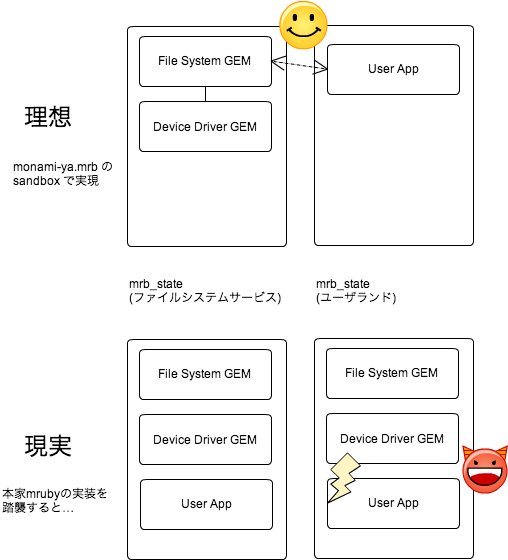

先ほどの続き．
sandbox の需要を理解するには，前提として，Webサーバと RTOS とで，スレッドの使われた方が違う，ということを，知識ではなく，腹に落としていないといけない．世界観の問題．
— もなか (@monamour555) June 14, 2014
mruby のコアを弄るような方々は，知識としては心得ているはず，だが．
など言って，実装理由を詳説しないのは，ちょっとイケ好かないかなということで．
本題に入るには，OS が提供する thread の使い方について，寄り道をする必要があります．
注: 本稿は，mruby の内部構造，特に，mrb_state と mrbgems の関係を理解していることを前提にしています．
thread の使い方，2通り
thread は，たかが機構なので，使い方は幾通りもありえます．
しかし，代表的なパターンとして，2通りの使い方があります． たぶんデザインパターン的な名前がありそうですが，知らないのでオレオレ命名で．
対称(symmetric)なスレッド
同じデータ構造で同じ処理を持つスレッドが，多数あるパターンです．
非同期に起こる多数の要求を裁くときに，しばしば見られます． 具体例としては，サーバのワーカースレッドや，ファイルシステム内の処理などがあります．
非対称なスレッド
複数のスレッドが，それぞれ異なるデータ構造を管理するパターンです． データ構造が異なるのですから，各スレッドが行う処理も，当然異なります．
「そういう時はプロセス分けるだろ」と思った方は，POSIX や Windows に頭を侵されています．
多くの RTOS では，スレッドに相当する概念はあります． しかし，プロセスに相当するリソース抽象化概念がありません．(注: 持っている RTOS もあります)
また，POSIX や Windows も，OS の内部では，スレッドに相当する概念はありますが，リソース抽象化の概念は無いか，希薄です． OSが抽象化を提供しているので，当然です．
mruby のスレッドバインディングとmrbgems
mruby は，言語としては，今のところスレッドを提供していません． しかし，マルチスレッディングの要求は，上記の2通りのいずれにせよ，間違いなくあります．
mruby を下位 OS のスレッドとバインドする典型的手法として，スレッド毎に mrb_state を割り当てる手法があります．
私は mod_mruby のソースコードを精読したわけではないですが． サーバへの mruby 活用の代表である， mod_mruby も，Apache のワーカースレッドに対し 1 つの mrb_state を割り当てているようです． この場合は，各スレッドは「対称」です． 全ての mrb_state は，同じように初期化されて構いません． 使える mrbgems も全てのスレッド(mrb_state)で同じもので構いません．
さて，本稿の本題．
非対称なスレッド構成を取ったシステムを考えてみます．
実例として，uITRON, OSEK/VDX クラスの RTOS 上にファイルシステムとユーザアプリを mruby のみで作るとします．
構成としては，デバドラ + ファイルシステム + ユーザアプリになります．
デバドラとファイルシステムは，再利用性が高いので，おそらく mrbgems として実装するでしょう． そして，非同期処理になりますので，(デバドラ + ファイルシステム)のスレッドと，ユーザアプリのスレッドに分けるでしょう．スレッド間通信も mrbgems として提供するかもしれません． 常識的な RTOS のアプリ設計です．
ここで，思い出してみましょう． 現在の mruby では，全ての mrb_state で，全ての mrbgems を共有します． つまり，スレッドを分けても，ユーザアプリは，ファイルシステムを迂回して直接デバドラのメソッドを叩けます．

これを気持ち悪くないと思う開発者が居たとしたら，別の職種にジョブチェンジしたほうがよいでしょう．
なぜ他のmruby開発者はsandboxを必要と思わないのか．
今のところ，mruby へ sandbox を仕掛ける実装は殆どみかけません． mattn 氏が mruby-sandbox なる実験をしてはいますけれども． 私はかつて，lazy initialization なる提案をしていて，これは sandbox を狙ったものだったのですが，意図がうまく伝わらなかったのか，フルボッコに終わりました．
実のところ，彼らでないので真の理由は解りません． しかし，私の想像が及ぶ限りにおいて，必要と思わない理由は，2種類あります．
説: Web サーバくらいまでしか考えてない
ひとつは，”くみこみ！”など言いながらも，結局 web サーバのことまでしか考えが及ばないから． 対称なスレッドだけですむ世界なら，今の実装でも十分です．
もちろん，世界最高水準の開発者集団ですから，非対称スレッドの設計についても，頭では理解できておられるでしょう． それと，腹に落として理解できるというのは，必ずしも一致しません． 技術というものの難しいところであります．
説: コードゴルフに偏りすぎている
もう一つは，組み込み系技術者たちは，小さな機器組み込みに偏りすぎているから． ちっちゃいもの好きは，ニッポンの組み込みのガラパゴ特徴ですが，mruby も漏れずに思えます． Mindstorms/NXT やらFM3-USBSTICKやら STM32F4 やら，RTOSを載せるのさえも一苦労な環境に，開発者たちの視線が集中しています．
コードゴルフは私も嫌いではないですが． 現在でもオンチップ 256KB は珍しくないマイコン世界． MB 級の RAM がオンチップになるのは時間の問題なのになぁ…． 盆栽みたいなものですかね．
ともあれ，mrb_state をひとつ持たせるのがやっとの環境では，スレッドと mrb_state の組が複数存在する環境で起こることを想定するのは難しいでしょう． 私は，Mocloudos や mruby + TOPPERS + Blackfin といった，潤沢なスペックを持つ(とはいってもデスクトップやサーバに比べると極めて貧弱な)環境上で mruby を動作させています． そのため，早期に気がついた，ということはあるでしょう．
というわけで，mruby で sandbox が何故必要なのか，なぜ本家に登場しないのか，ざざっと意見表明いたしました．
こう言ってはナンですが，今の体制のままだと，本家mrubyがベアメタルな機器組み込みに応用されるようになるのは，ずいぶんと先になるんじゃないかな…．
まあ，別に，”本家”に拘る必要も無いといえば無いのですが．